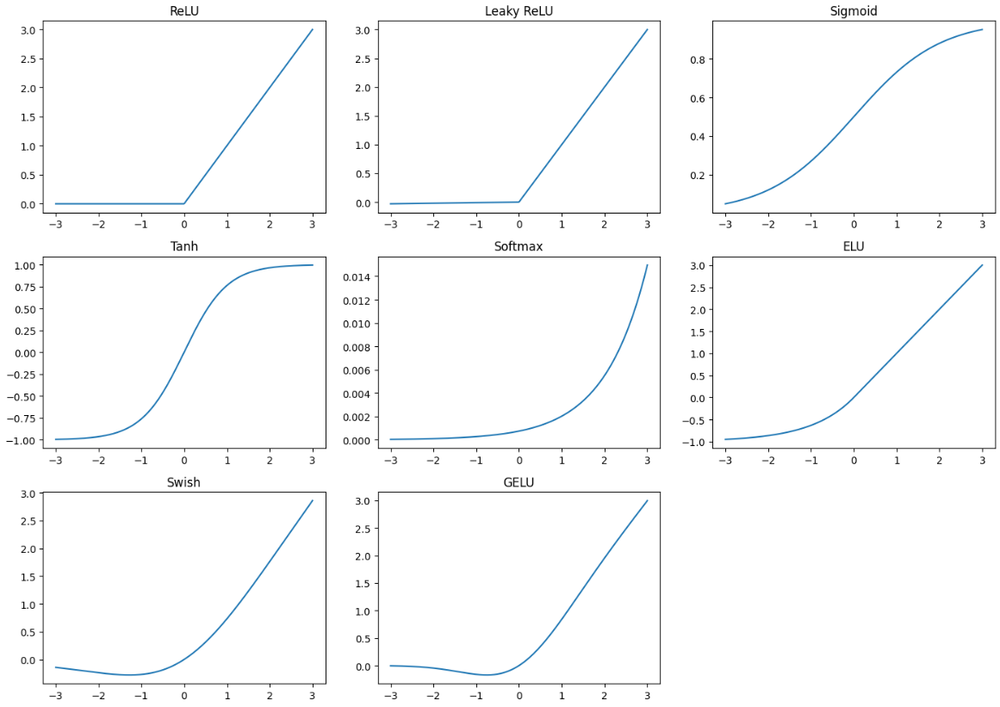
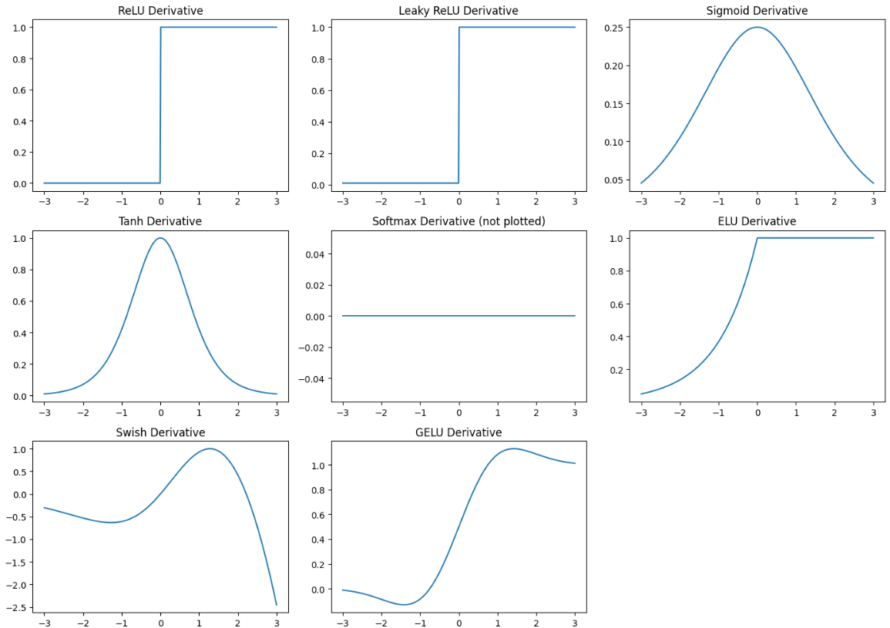

Activation Functions and Their Derivatives#
By Seyedeh Mehrnoosh Ziaei
Contact : s.mehrnooshziaei@gmail.com
Machine Learning - Autoencoders - Types of autoencoders - Octobor 2024
1. ReLU (Rectified Linear Unit)#
Function:#
\( f(x) = \max(0, x) \)
Derivative:#
Explanation:#
For \( x < 0 \), the function outputs 0 (constant), so the derivative is 0. For \( x > 0 \), the function is linear (slope of 1), so the derivative is 1.
2. Leaky ReLU#
Function:#
Derivative:#
Explanation:#
Similar to ReLU, but for \( x < 0 \), the slope is \( \alpha \) instead of 0.
3. Sigmoid#
Function:#
Derivative:#
Explanation:#
Using the chain rule, we can derive that the derivative can be expressed in terms of the function itself.
4. Tanh (Hyperbolic Tangent)#
Function:#
Derivative:#
Explanation:#
This is derived from the quotient rule or recognizing that the hyperbolic tangent function relates to exponential functions.
5. Softmax#
Function:#
Derivative:#
Explanation:#
The derivative is computed using the quotient rule and recognizing that softmax is used for multi-class probabilities.
6. ELU (Exponential Linear Unit)#
Function:#
Derivative:#
Explanation:#
The derivative follows similarly to ReLU, but the negative part is based on the exponential function.
7. Swish#
Function:#
Derivative:#
Explanation:#
This derivative can be found using the product rule and the chain rule.
8. GELU (Gaussian Error Linear Unit)#
Function:#
Derivative:#
Deriving GELU is more complex, but it can be expressed as:
Explanation:#
The derivative is calculated using the product rule, chain rule, and recognizing the derivative of the hyperbolic tangent.
Summary of Derivatives#
Activation Function |
Derivative Formula |
|---|---|
ReLU |
\( f'(x) = \begin{cases} 0 & \text{if } x < 0 \\ 1 & \text{if } x > 0 \end{cases} \) |
Leaky ReLU |
\( f'(x) = \begin{cases} 1 & \text{if } x > 0 \\ \alpha & \text{if } x < 0 \end{cases} \) |
Sigmoid |
\( f'(x) = f(x)(1 - f(x)) \) |
Tanh |
\( f'(x) = 1 - \tanh^2(x) \) |
Softmax |
\( f'(x_i) = \begin{cases} f(x_i)(1 - f(x_i)) & \text{if } i = j \\ -f(x_i)f(x_j) & \text{if } i \neq j \end{cases} \) |
ELU |
\( f'(x) = \begin{cases} 1 & \text{if } x > 0 \\ \alpha e^{x} & \text{if } x < 0 \end{cases} \) |
Swish |
\( f'(x) = \text{sigmoid}(x) + x \cdot \text{sigmoid}(x)(1 - \text{sigmoid}(x)) \) |
GELU |
More complex; requires product and chain rule |
Activation Functions Code and Plot#
import numpy as np
import matplotlib.pyplot as plt
# Define the activation functions
def relu(x):
return np.maximum(0, x)
def leaky_relu(x, alpha=0.01):
return np.where(x > 0, x, alpha * x)
def sigmoid(x):
return 1 / (1 + np.exp(-x))
def tanh(x):
return np.tanh(x)
def softmax(x):
e_x = np.exp(x - np.max(x)) # for numerical stability
return e_x / np.sum(e_x)
def elu(x, alpha=1.0):
return np.where(x > 0, x, alpha * (np.exp(x) - 1))
def swish(x):
return x / (1 + np.exp(-x))
def gelu(x):
return 0.5 * x * (1 + np.tanh(np.sqrt(2/np.pi) * (x + 0.044715 * np.power(x, 3))))
# Generate input data
x = np.linspace(-3, 3, 400)
# Plotting
plt.figure(figsize=(14, 10))
plt.subplot(3, 3, 1)
plt.plot(x, relu(x))
plt.title('ReLU')
plt.subplot(3, 3, 2)
plt.plot(x, leaky_relu(x))
plt.title('Leaky ReLU')
plt.subplot(3, 3, 3)
plt.plot(x, sigmoid(x))
plt.title('Sigmoid')
plt.subplot(3, 3, 4)
plt.plot(x, tanh(x))
plt.title('Tanh')
plt.subplot(3, 3, 5)
plt.plot(x, softmax(x))
plt.title('Softmax')
plt.subplot(3, 3, 6)
plt.plot(x, elu(x))
plt.title('ELU')
plt.subplot(3, 3, 7)
plt.plot(x, swish(x))
plt.title('Swish')
plt.subplot(3, 3, 8)
plt.plot(x, gelu(x))
plt.title('GELU')
plt.tight_layout()
plt.show()

Derivates of Activation Functions Code and Plot#
import numpy as np
import matplotlib.pyplot as plt
# Define the activation functions
def relu(x):
return np.maximum(0, x)
def leaky_relu(x, alpha=0.01):
return np.where(x > 0, x, alpha * x)
def sigmoid(x):
return 1 / (1 + np.exp(-x))
def tanh(x):
return np.tanh(x)
def softmax(x):
e_x = np.exp(x - np.max(x)) # for numerical stability
return e_x / np.sum(e_x)
def elu(x, alpha=1.0):
return np.where(x > 0, x, alpha * (np.exp(x) - 1))
def swish(x):
return x / (1 + np.exp(-x))
def gelu(x):
return 0.5 * x * (1 + np.tanh(np.sqrt(2/np.pi) * (x + 0.044715 * np.power(x, 3))))
# Define the derivative functions
def relu_derivative(x):
return np.where(x > 0, 1, 0)
def leaky_relu_derivative(x, alpha=0.01):
return np.where(x > 0, 1, alpha)
def sigmoid_derivative(x):
s = sigmoid(x)
return s * (1 - s)
def tanh_derivative(x):
return 1 - np.tanh(x)**2
def softmax_derivative(x):
s = softmax(x)
return np.diag(s) - np.outer(s, s)
def elu_derivative(x, alpha=1.0):
return np.where(x > 0, 1, alpha * np.exp(x))
def swish_derivative(x):
s = swish(x)
return s + x * sigmoid(x) * (1 - s)
def gelu_derivative(x):
return 0.5 * (1 + np.tanh(np.sqrt(2/np.pi) * (x + 0.044715 * np.power(x, 3)))) + \
0.5 * x * (1 - np.tanh(np.sqrt(2/np.pi) * (x + 0.044715 * np.power(x, 3)))**2) * \
(np.sqrt(2/np.pi) * (1 + 3 * 0.044715 * np.power(x, 2)))
# Generate input data
x = np.linspace(-3, 3, 400)
# Plotting the derivatives
plt.figure(figsize=(14, 10))
plt.subplot(3, 3, 1)
plt.plot(x, relu_derivative(x))
plt.title("ReLU Derivative")
plt.subplot(3, 3, 2)
plt.plot(x, leaky_relu_derivative(x))
plt.title("Leaky ReLU Derivative")
plt.subplot(3, 3, 3)
plt.plot(x, sigmoid_derivative(x))
plt.title("Sigmoid Derivative")
plt.subplot(3, 3, 4)
plt.plot(x, tanh_derivative(x))
plt.title("Tanh Derivative")
plt.subplot(3, 3, 5)
# Softmax derivative is complex and requires a specific format
# We'll skip this plot as it needs a 2D visualization
plt.plot(x, np.zeros_like(x)) # Placeholder
plt.title("Softmax Derivative (not plotted)")
plt.subplot(3, 3, 6)
plt.plot(x, elu_derivative(x))
plt.title("ELU Derivative")
plt.subplot(3, 3, 7)
plt.plot(x, swish_derivative(x))
plt.title("Swish Derivative")
plt.subplot(3, 3, 8)
plt.plot(x, gelu_derivative(x))
plt.title("GELU Derivative")
plt.tight_layout()
plt.show()
